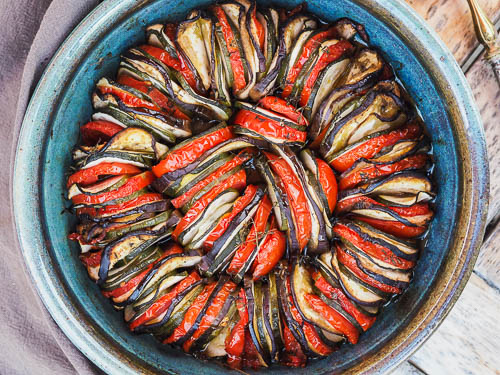

Tian de légume

Délicieux tian de légume provencale dans un plat rond
Assemblage de légumes de provence coupés en fines tranche disposés debout dans un fond de pâte brisée et cuit au four
- 2 Tomates
- 1 Courgette
- 1 Aubergine
- 1 Poivron jaune
- 1 Fond de tarte brisée
- 1 Gousse d'ail
- 100 g de pesto
- Foncer le fond de tarte
- Couper les légumes en fines tranches
- Les disposer a la verticale
- Mettre un fond de pesto dans le fond
- Disposer les légumes en prenant soin de bien les coller les un autre aux autres
- Disposer l'ail sur le tout
- Enfourner 45 min à 1 h à 200°C au four ventilé
Revenir